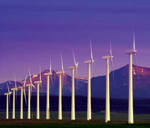
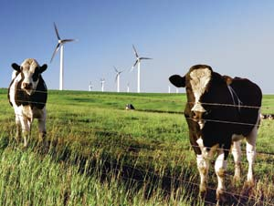
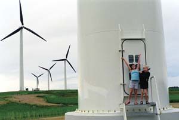
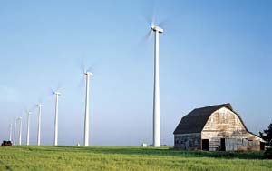
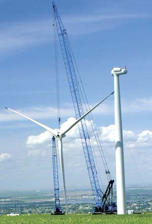

Whither Wind?
A journey through the heated debate over wind farms
By Charles Komanoff
February/March 2007
It was a place I had often visited in memory but feared might no longer exist. Orange slabs of calcified sandstone teetered overhead, while before me, purple buttes and burnt mesas stretched over the desert floor. In the distance I could make out southeast Utah’s three snowcapped ranges - the Henrys, the Abajos, and 80 miles to the east, the La Sals, shimmering in the blue horizon.
No cars, no roads, no buildings. Two crows floating on the late-winter thermals. Otherwise, stillness.
Edward Abbey’s country. But my country, too. Almost 40 years after Abbey wrote Desert Solitaire, 35 since I first came to love this Colorado River plateau, I was back with my two sons, who were 11 and 8. We had spent four sun-filled days clambering across slickrock in Arches National Park and crawling through the slot canyons of the San Rafael Reef. Now, perched on a precipice above Goblin Valley, stoked on endorphins and elated by the beauty before me, I had what might seem a strange, irrelevant thought: I didn’t want windmills here.
Not that any windmills are planned for this Connecticut-sized expanse - the winds are too fickle. But wind energy is never far from my mind these days. As Earth’s climate begins to warp under the accumulating effluent from fossil fuels, the increasing viability of commercial-scale wind power is one of the few encouraging developments.
Encouraging to me, at least. As it turns out, there is much disagreement over where big windmills belong, and whether they belong at all.
Why Wind Farms?
Fighting fossil fuels, and machines powered by them, has been my life’s work. As an energy analyst, I can tell you that the science on global warming is terrifyingly clear: To have even a shot at fending off climate catastrophe, the world must reduce carbon dioxide (CO2) emissions by at least 50 percent within the next few decades. If poor countries are to have any room to develop, the United States - the biggest emitter by far - needs to cut back by 75 percent.
Although automobiles, with their appetite for petroleum, may seem like the main culprit, the No. 1 climate change agent in the United States is actually electricity. The most recent inventory of U.S. greenhouse gases found that power generation was responsible for a whopping 38 percent of CO2 emissions. Yet the electricity sector may also be the least complicated to make carbon free. Approximately three-fourths of U.S. electricity is generated by burning coal, oil or natural gas. Accordingly, switching that same portion of U.S. electricity generation to nonpolluting sources such as wind turbines, while simultaneously ensuring that our ever-expanding arrays of lights, computers and appliances are increasingly energy efficient, would eliminate 38 percent of the country’s CO2 emissions and bring us halfway to the goal of cutting emissions by 75 percent.
To achieve that power switch entirely through wind power would require 400,000 windmills rated at 2.5 megawatts each, by my calculations. To be sure, this is a hypothetical figure, since it ignores such real-world issues as limits on power transmission and the intermittence of wind, but it’s a useful benchmark just the same.
What would WIND FARMS entail?
To begin, I want to be clear that the turbines I’m talking about are huge, with blades up to 165 feet long mounted on towers rising several hundred feet. Household wind machines such as the 100-foot-high Bergey 10-kilowatt BWC Excel with 11-foot blades, the mainstay of the residential and small business wind turbine market, may embody democratic self-reliance and other “small is beautiful” virtues, but we can’t look to them to make a real dent in the big energy picture.
What dictates the supersizing of windmills are two basic laws of wind physics: A wind turbine’s energy potential is proportional to the square of the length of the blades, and to the cube of the speed at which the blades spin. I’ll spare you the math, but the difference in blade lengths, the greater wind speeds higher off the ground, and the sophisticated controls available on industrial-scale turbines all add up to a market-clinching 500-fold advantage in electricity output for a giant General Electric or Vestas wind machine.
How much land do these industrial turbines require? The answer turns on what “require” means. An industry guideline is that to maintain adequate exposure to the wind, each big turbine needs space around it of about 60 acres. Since 640 acres make a square mile, those 400,000 turbines would need 37,500 square miles, or roughly all the land in Indiana or Maine.
On the other hand, the land actually occupied by the turbines - their “footprint” - would be far, far smaller. For example, each 3.6-megawatt Cape Wind turbine proposed for Nantucket Sound will rest on a platform roughly 22 feet in diameter, implying a surface area of 380 square feet - the size of a typical one-bedroom apartment in New York City. Scaling that up by 400,000 suggests that just six square miles of land - less than the area of a single big Wyoming strip mine - could house the bases for all of the windmills needed to banish coal, oil and gas from the U.S. electricity sector.
Of course, erecting and maintaining wind turbines also can necessitate clearing land: Ridgeline installations often require a fair amount of deforestation, and then there’s the associated clearing for access roads, maintenance facilities, and the like. But there are also now a great many turbines situated on farmland, where the fields around their bases are still actively farmed. Depending, then, on both the particular terrain and how the question is understood, the land area said to be needed for wind power can vary across almost four orders of magnitude.
WIND POWER: A Fractious Debate
Similar divergences of opinion are heard about every aspect of wind power. Big wind farms kill thousands of birds and bats ... or hardly any, in comparison to avian mortality from other tall structures such as skyscrapers. Industrial wind machines are soft as a whisper from a thousand feet away, and even up close their sound level would rate as “quiet” on standard noise charts ... or they can sound like “the shrieking sound of a wild animal,” according to one unhappy neighbor of an upstate New York wind farm.
Some of the bad press is warranted. The first giant wind farm, comprising 6,000 small, fast-spinning turbines placed directly in Northern California’s principal raptor flyway, Altamont Pass, in the early 1980s rightly inspired the epithet “Cuisinarts for birds.” The longer blades on newer turbines rotate more slowly and thus kill far fewer birds, but bat kills are being reported at wind farms in the Appalachian Mountains; as many as 2,000 bats were hacked to death at one 44-turbine installation in West Virginia. And as with any machine, some of the nearly 10,000 industrial-grade windmills now operating in the United States may groan or shriek when something goes wrong.
At the same time, however, there is an apocalyptic quality to much anti-wind advocacy that seems wildly disproportionate to the actual harm, particularly in the overall context of not just other sources of energy but modern industry in general. New York state opponents of wind farms call their Web site “Save Upstate New York.” In Massachusetts, a group called Green Berkshires argues that wind turbines “are enormously destructive to the environment,” but does not perform the obvious comparison to the destructiveness of fossil fuel-based power. Although the intensely controversial Cape Wind project “poses an imminent threat to navigation and raises many serious maritime safety issues,” according to the anti-wind Alliance to Protect Nantucket Sound, the alliance was strangely silent when an oil barge bound for the region’s electric power plant spilled 98,000 gallons of its deadly, gluey cargo into Buzzards Bay in 2003.
Of course rhetoric is standard fare in advocacy, particularly the environmental variety with its salvationist mentality - environmentalists always like to feel they are “saving” this valley or that species. You can spend hours sifting through the anti-wind Web sites and find no mention at all of the climate crisis, let alone wind power’s potential to help avert it.
In fact, many wind power opponents deny that wind power displaces much, if any, fossil fuel burning. This notion is mistaken. It is true that since wind is variable, individual wind turbines can’t be counted on to produce on demand, so the power grid can’t necessarily retire fossil fuel generators at the same rate as it takes on windmills. The coal- and oil-fired generators will still need to be there, waiting for a windless day. But when the wind blows, those generators can spin down. That’s how the grid works; it allocates electrons.
What about the need to keep a few power stations burning fuel so they can instantaneously ramp up and counterbalance fluctuations in wind energy output? The grid requires this ballast, known as spinning reserve, in any event both because demand is always changing and because power plants of any type are subject to unforeseen breakdowns. The additional variability due to wind generation is slight - wind speeds don’t suddenly drop from strong to calm, at least not for every turbine in a wind farm and certainly not for every wind farm on the grid.
With very few exceptions, then, wind output can be counted on to displace fossil fuel burning one for one. No less than other nonpolluting technologies such as bicycles or photovoltaics, wind power is truly an anti-fossil fuel.
What Windmills Signify
I made my first wind farm visits in the fall of 2005, to the 20-windmill Fenner Windpower Project and the seven-windmill Madison Windpower Project, both located in Madison County, N.Y. It was windy, though not unusually so, according to the locals. All 27 turbines were spinning, presumably at their full 1.5-megawatt ratings. For every hour in full use, each windmill was keeping a couple of barrels of oil, or an entire half-ton of coal, in the ground. Of course wind turbines don’t generate full power all the time because the wind doesn’t blow at a constant speed. The Madison County turbines have an average annual output rate of 28 percent, meaning that over the course of a year, they generate between one-fourth and one-third of the electricity they would produce if they always ran at full capacity. But that still means an average 2,500 hours per year of full output for each turbine. Multiply those hours by the 27 turbines at Fenner and Madison, and a good 160,000 barrels of oil or 40,000 tons of coal were being kept underground by the two wind farms each year.
The windmills, spinning at 15 revolutions per minute - that’s one revolution every four seconds - were clean and elegant in a way that no oil derrick or coal dragline could ever be. The nonlinear arrangement of the Fenner turbines situated them comfortably among the traditional farmhouses, paths and roads, while at Madison, a grassy hillside site, the windmills were more prominent but still unaggressive. The windmills didn’t seem like a violation of the landscape. The turning vanes called to mind a natural force - the wind - in a way that a cell phone or microwave tower, for example, most certainly does not.
They were also relatively quiet. My sound readings, taken at distances ranging from 100 to 2,000 feet from the tower base, topped out at 64 decibels and went as low as 45 - the approximate noise range for a small-town residential cul-de-sac.
Thinking back on that November day, I’ve come to realize that a windmill, like any large structure, is a signifier. Cell phone towers signify the intrusion of quotidian life - the reminder to stop at the 7-Eleven, the unfinished business at the office. The windmills I saw in upstate New York signified, for me, not just displacement of destructive fossil fuels, but acceptance of the conditions of inhabiting the Earth.
What about the argument that the potential energy produced by wind turbines could be saved instead through energy-efficiency measures? Examples include swapping out incandescent light bulbs in favor of compact fluores cents, replacing inefficient kitchen appliances and extinguishing “vampire” loads by plugging watt-sucking electronic devices into on-off power strips. If this notion sounds familiar, it’s because it has been raised in virtually every power plant dispute since the 1970s. But the ground has shifted, now that we have such overwhelming proof that we’re standing on the threshold of catastrophic climate change.
Those power plant debates of yore weren’t about fuels and certainly not about global warming, but about whether to top off the grid with new supply or energy saved through conservation. The energy arena of old was local and incremental. The new one is global and all-out. With Earth’s climate, and the world as we know and love it, now imperiled, topping off the regional grid pales in comparison to the task at hand. In the new, ineluctable struggle to rescue the climate from fossil fuels, efficiency and “renewables” (solar, biomass and wind) must all be pushed to the max.
A New Ethic for WIND POWER Siting
Part of the problem with wind power, I suspect, is that it’s hard to weigh the effects of any one wind farm against the greater problem of climate change. It’s much easier to comprehend the immediate impact of wind farm development than the less tangible losses from a warming Earth.
Intruding the unmistakable human hand on any landscape for wind power is, of course, a loss in local terms, and no small one. The inevitable access roads for erecting and serving the turbines can be damaging ecologically as well as symbolically. In contrast, you will feel few benefits of the wind farm in a tangible way. If the thousands of tons of coal a year that your wind farm will replace were being mined a mile from your house, it might be a little easier to take.
If Congress enacted an energy policy that harnessed the spectrum of cost-effective energy efficiency together with renewable energy, thereby ensuring that fossil fuel use shrank starting today, a windmill’s contribution to climate protection might actually register, providing psychic reparation for an altered viewshed. If carbon fuels were taxed for their damage to the climate, wind power’s profit margins would widen. And surrounding communities could extract bigger tax revenues from wind farms, which could go to a new high school, or land acquired for a nature preserve.
It’s very human to ask, “Why me? Why my ridgelinee, my seascape, my viewshed?” These questions have been difficult to answer; there has been no framework - local or national - to guide wind farm siting by ranking potential wind power locales for their ecological and community suitability. That’s a gap that the Appalachian Mountain Club (AMC) is trying to bridge, using its home state of Massachusetts as a model.
According to AMC research director Kenneth Kimball, who heads the project, Massachusetts has 96 linear miles of “Class 4” ridgelines, where wind speeds average 14 mph or more, the threshold for profitability with current technology. Assuming each mile can support seven to nine large turbines of roughly 2 megawatts each, the state’s uplands could theoretically host 1,500 megawatts of wind power. (Coastal areas such as Nantucket Sound weren’t included in the survey.)
Kimball’s team sorted all 96 miles into four classes of governance - Appalachian Trail corridor or similar lands where development is prohibited; other federal or state conservation lands; Massachusetts open space lands; and private holdings. Then they overlaid these with ratings denoting conflicts with recreational, scenic and ecological values. The resulting matrix suggests the following rankings of wind power suitability:
1. Unsuitable: Lands where development is prohibited (Appalachian Trail corridors, for example) or “high conflict” areas: 24 miles (25 percent)
2. Less than ideal: Federal or state conservation lands rated “medium conflict”: 21 miles (22 percent)
3. Conditionally favorable: Conservation or open space lands rated “low conflict,” or open space or private lands rated “medium conflict”: 27 miles (28 percent)
4. Most favorable: Unrestricted private land and “low conflict” areas: 24 miles (25 percent)
Category 4 lands are obvious places to look to for wind farm development. Category 3 lands could also be considered, says the AMC, if wind farms were found to improve regional air quality, were developed under a state plan rather than piecemeal, and were bonded to assure eventual decommissioning. If these conditions were met, then categories 3 and 4, comprising approximately 50 miles of Massachusetts ridgelines, could host 400 wind turbines capable of supplying nearly 4 percent of the state’s annual electricity - without grossly endangering wildlife or threatening scenic, recreational or ecological values.
Whether that 4 percent is a little or a lot depends on where you stand and, equally, on where we stand as a society. You could call the 400 turbines mere tokenism against our fuel-besotted way of life, and considering them in isolation, you’d be right. But you could also say this: Go ahead and halve the state’s power usage, as could be done even with present-day technology, and “nearly 4 percent” doubles to 7 percent to 8 percent. Add the Cape Wind project and other offshore wind farms that might follow, and wind power’s statewide share might reach 20 percent, the level in Denmark.
Moreover, the windier and emptier Great Plains states could reach 100 percent wind power or higher, even with a suitability framework like the AMC’s, thereby becoming net exporters of clean energy. But even at 20 percent, Massachusetts would be doing its part to displace a portion of the 75 percent of U.S. electricity generated by fossil fuels. If you spread the turbines needed to achieve that goal across all 50 states, you’d be looking to produce roughly 800 megawatt-hours of wind output per square mile - just about what Massachusetts would be generating in the above scenario.
So goes my notion, anyway. You could call it wind farms as signifiers, with their value transcending energy-share percentages to reach the realm of symbols and images. That is where we who love nature and obsess about the environment have lost the high ground, and where Homo americanus has been acting out his (and her) disastrous desires - opting for the “manly” SUV over the prim Prius, the macho powerboat over the meandering canoe, the stylish halogen lamp over the dorky compact fluorescent.
Throughout his illustrious career, wilderness champion David Brower called upon Americans to “determine that an untrammeled wildness shall remain here to testify that this generation had love for the next.” Now that all wild things and all places are threatened by global warming, that task is more complex.
Could a windmill’s ability to “derive maximum benefit out of the site-specific gift nature is providing - wind and open space,” in the words of aesthetician Yuriko Saito, help Americans bridge the divide between pristine landscapes and sustainable ones? Could windmills help Americans subscribe to the “higher order of beauty” that environmental educator David Orr defines as something that “causes no ugliness somewhere else or at some later time”? Could acceptance of wind farms be our generation’s way of avowing our love for the next?
I believe so. Or want to.
- Adapted from a longer article of the same name, which originally appeared in Orion Magazine - a publication that combines creative ideas and practical solutions to reconnect human culture with the natural world. For more information on Orion, call (888) 909-6568 or visit www.orionmagazine.org.
Charles Komanoff is director of Komanoff Energy Associates. He has written extensively about energy, economics and the environment, as well as pedestrian and bicyclist rights in New York City. His Web site is www.komanoff.net.
|
 ENERGY NORTHWEST/NREL Construction of a turbine in Washington state. |
 WARREN GRETZ/NREL Cattle don't seem to share the NIMBY (Not In My Back Yard) mentality. |
 ISTOCKPHOTO/CRAIG HILL The turning vanes call to mind a natural force - the wind - in a way that a cell phone or microwave tower, for example, most certainly do not. |
|
 JIM GREEN/NREL Yep, these suckers are really big! Blades 165 feet long mounted on towers hundreds of feet high take full advantage of upper level wind currents, allowing us to displace a portion of our fossil fuel consumption. |
 WARREN GRETZ/NREL Low conflict areas, such as cultivated agricultural fields or pastures, are prime locations for wind turbines. |
 ENERGY NORTHWEST/NREL Construction of a turbine in Washington state. |